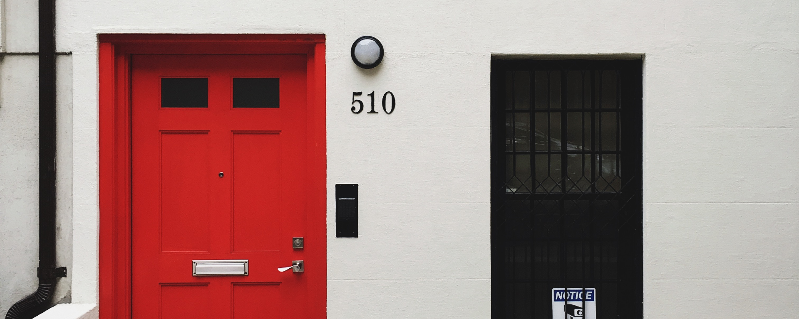
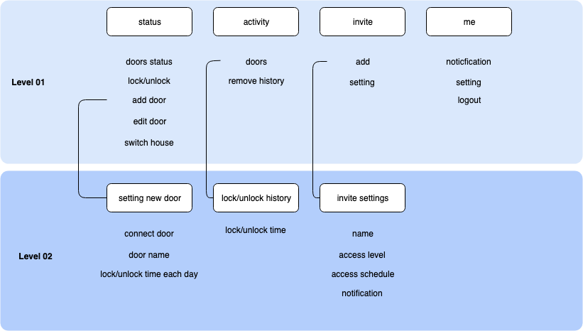

LOCK IT IN
Overview
With the recent growth in smart home technology many companies are springing up that provide smart locks. These locks allow users to use their smartphone instead of a key.My job is to create a smartphone app that will allow users to interact with their smart lock. Make sure that users can lock/unlock their door, view current status, and review recent activity.
User Stories
- lock/unlock door
as a user I want to lock my front door of my house from office so I do not have to go back to my home to make sure whether it is lock or not - view recent activity
as a user I want to view recent activities so I can know who opened the door and when the door had been opened - invite guests
as a user I want to send digital key to guest so I do not have to be available when the door of my house need to be opened
IA
Logic Flow